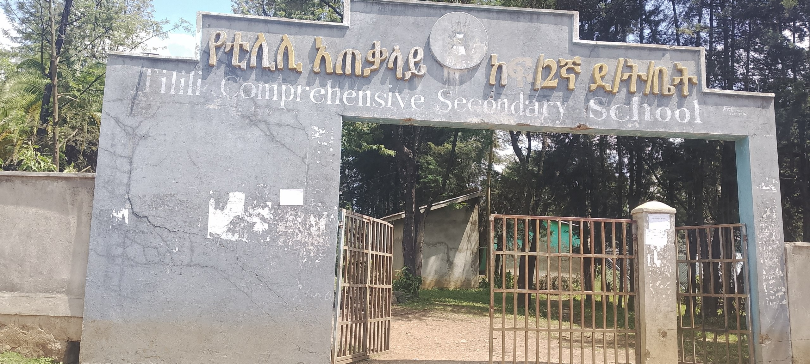

Tilili General Primary and Secondary School

I continued my education at Tilili General Primary and Secondary School.
During this period, I gained knowledge in different subjects, improved my academic abilities, and developed important life skills.
My school experience encouraged me to work hard and continue pursuing my educational goals.
Back to Education PageMy School Experience
My high school years were an important part of my learning and personal development.